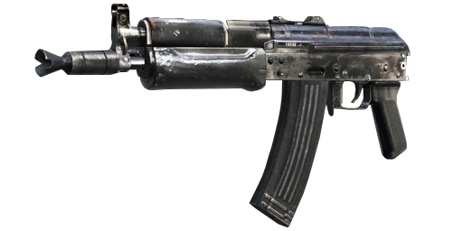
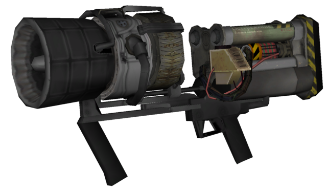

Call Of Duty Black Ops

Como número 3, tenemos al subfusil AK74u, conocido por ser un arma rápida, eficaz y capaz de resistir muchas rondas sin necesidad de mejoras.

Como número 2, tenemos a la legendaria Arma de Rayos o Raygun, una bestia de otro mundo capaz de resistir horas de juego sin necesidad de mejorarse, y su variante mejorada MK2 demuestra aún más su potencial.

Como número 1, tenemos a la bestia que se hace llamar Thundergun, capaz de abatir de un disparo a cualquier zombie normal, sea de la ronda que sea.